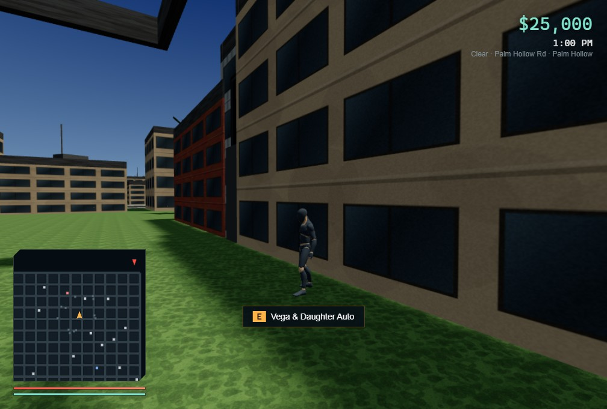

Take the wheel
Explore on foot, grab a car and drive through the streets of San Aurelio.

SAN AURELIO, CALIFORNIA / PLAYABLE ALPHA
The shop closes at nine.
Everything else stays open.
Desktop browser · Windows 10/11 · Keyboard, mouse & controller
YOUR CITY. YOUR NIGHT.
Alex Vega returns to a family garage on the edge of closing. Take on the first three story missions, or head straight into Free Roam with cash, a fast car and a city to explore.
Explore on foot, grab a car and drive through the streets of San Aurelio.
Earn money, race, buy vehicles and see how long you can lose the police.
This is an early playable game. Three story missions are available; the remaining story is still in development. Multiplayer requires a separately hosted server.
KEEP THE CITY ON YOUR DESKTOP
Install once. Play Story Mode and Free Roam offline.
Version 0.3.1 · Windows 10 or 11
DOWNLOAD FOR WINDOWSOpen the .exe installer, choose a folder, then launch from your desktop or Start menu. This alpha installer is unsigned.
Release notes & checksumsW A S D Move / drive
Mouse Look around
E Interact
E Enter / exit car
Esc Pause & settings
M City map
Xbox and PlayStation controllers work in-game. Use a mouse for the menus. The browser edition needs WebGL 2; touchscreen controls are not included.